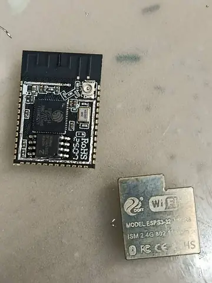
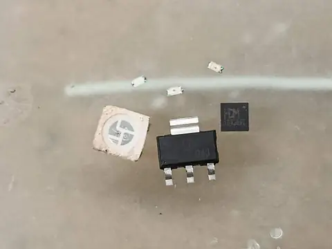
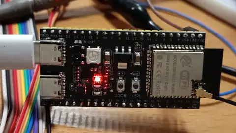
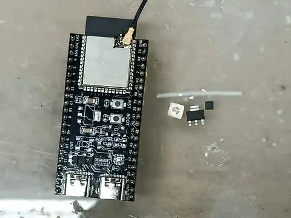
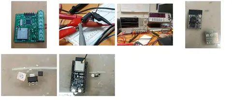
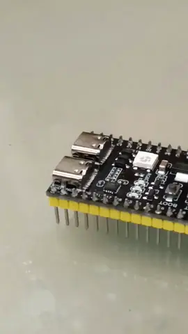
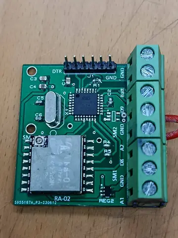
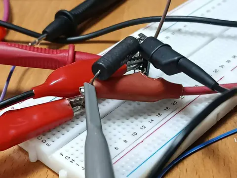
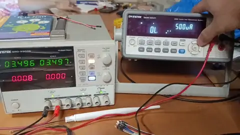
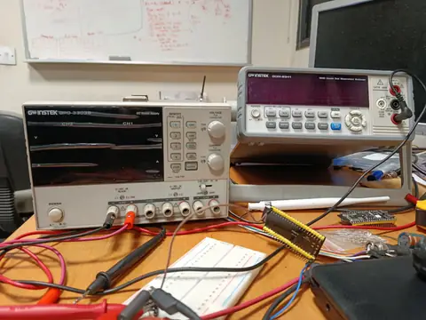

ESP32 radio and power characterization for long term soil monitoring at WIT LUMS.
Motivation
Distributed soil sensors need affordable wireless links and low energy use to operate across field sites with limited maintenance.
Implementation and scope
- Evaluated ESP NOW as a communication option for soil monitoring nodes during a summer internship.
- Characterized boot and transmission current using laboratory instruments.
- Modified development board hardware and optimized firmware clock domains and sleep behavior.
- Tested long range communication in a semiurban environment.
Outputs
- Demonstrated communication over at least 500 metres with mild obstructions.
- Measured approximately 8.8 microamps in the optimized sleep configuration.
- Documented the feasibility study and experimental measurements in an internship presentation.
Presentation
Open WIT ESP NOW soil monitoring presentation in PowerPoint for the web · Download PowerPoint file
Photos and videos
Gallery

WIT Summer Internship

WIT Summer Internship
WIT Summer Internship

WIT Summer Internship

WIT Summer Internship
WIT Summer Internship

WIT Summer Internship

WIT Summer Internship
WIT Summer Internship

WIT Summer Internship